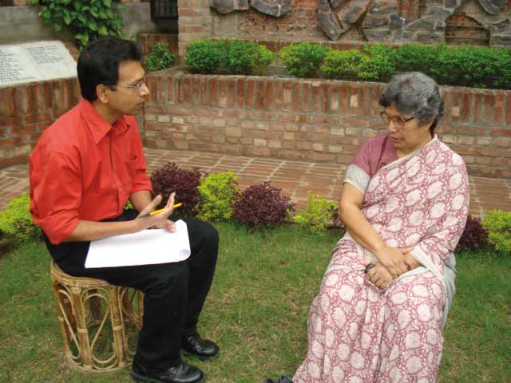

Jalladkhana Killing Field, is a mass grave site in Mirpur, Dhaka used in the 1971 Bangladesh genocide by Pakistan Army and its local collaborators during the Bangladesh Liberation war.
BU (20 September 1946 – 19 November 1972)...